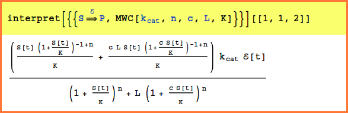

| MWC, GMWC (Generalized MWC Arrows) | Reference Home |
GMWC[kcat,n,c,L,K] is an uninstantiated function that encapsulates the parameters used in the Generalized Monod-Wyman-Changeux Model.
The functions MWC and GMWC can be use interchangeably, however, it is recommended for notebook clarity that MWC be used when the traditional model is used and GMWC be used when the generalized model is used.
Traditional MWC
Single Substrate
Multple Substrates
Generalized MWC
Without Competitive Inhibition
With a Single Substrate
With Multiple Substrates
With Competitive Inhibition
References:
[1] Monod J, Wyman J, Changeux JP (1965) On the nature of
allosteric transitions: A plausible model. Journal of
Molecular Biology, 12:88.
[2] Najdi TS, Yang CR, Shapiro BE, Hatfield GW, Mjolsness
ED (2006) Application of a generalize MWC model for the
mathematical simulation of pathways regulated by allosteric
enzymes. Journal of Bioinformatics and Computational
Biology, in press.